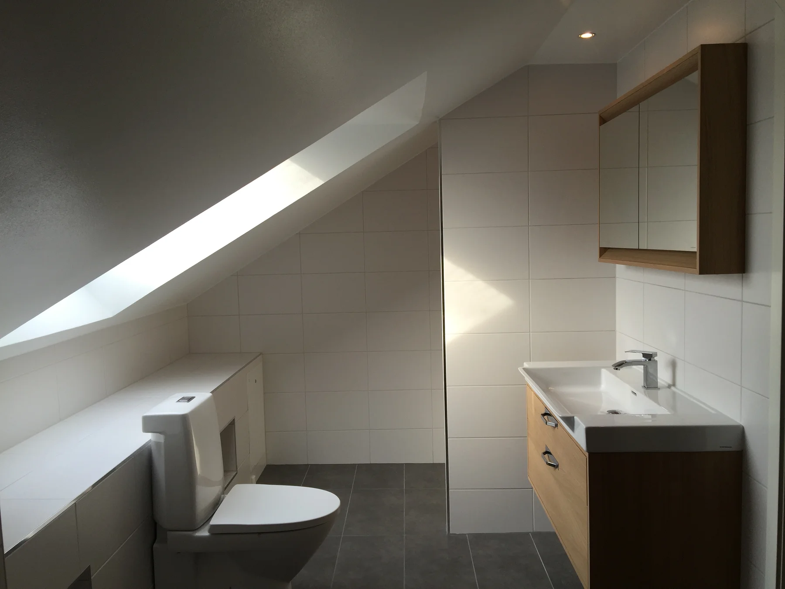

01
Badrum
Från de första idéerna till materialval och färdiga ytor. Vi hjälper dig att skapa ett badrum utifrån ditt hem, dina behov och din budget.
Upptäck badrumEtt nytt badrum, ett kök att samlas i eller mer plats att leva på. Vi hjälper dig från planering till genomförande.

Från de första idéerna till materialval och färdiga ytor. Vi hjälper dig att skapa ett badrum utifrån ditt hem, dina behov och din budget.
Upptäck badrum
Förnya det kök du redan har eller skapa något helt nytt. Vi hjälper dig med detaljerna, helheten och vägen däremellan.
Upptäck kök
När livet förändras kan hemmet följa med. Vi hjälper dig med tillbyggnader och renoveringar som tar vara på husets möjligheter.
Upptäck tillbyggnad & renoveringVi hjälper också till med tak, kakling, golvläggning, målning och snickeri. Berätta vad du planerar, så går vi igenom hur vi kan hjälpa dig.
Berätta om dina tankar. Vi hjälper dig att se möjligheterna och hitta en väg framåt.